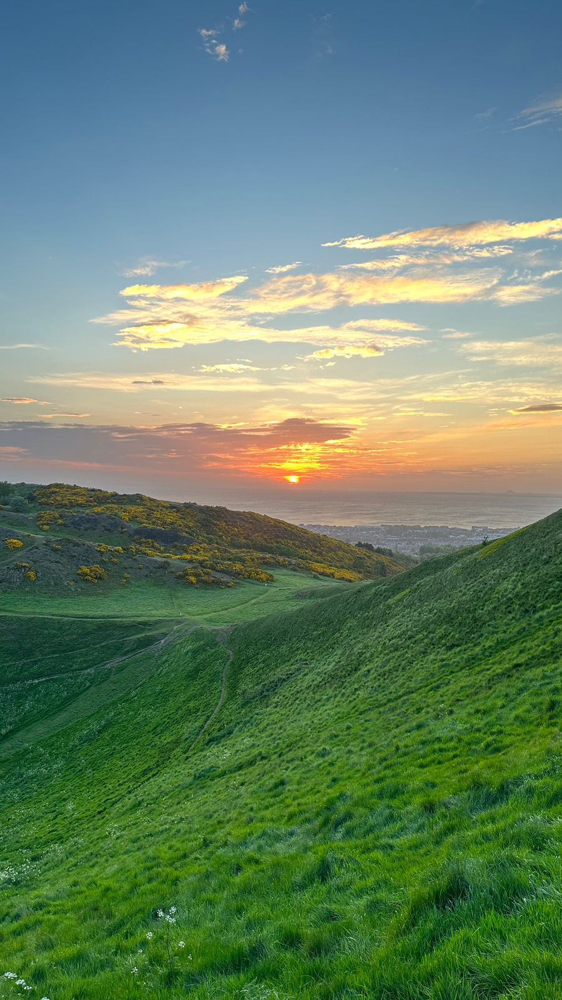
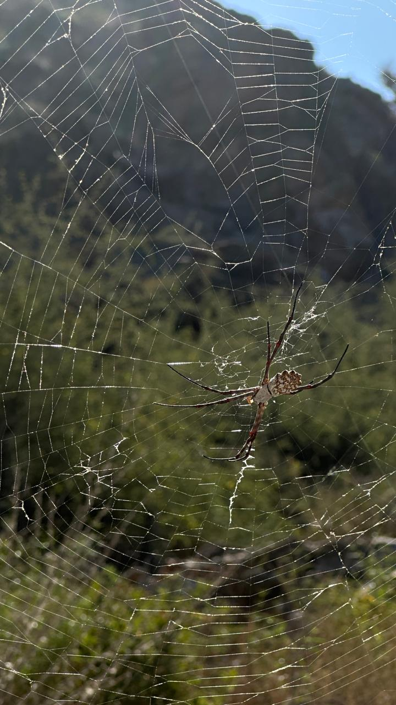
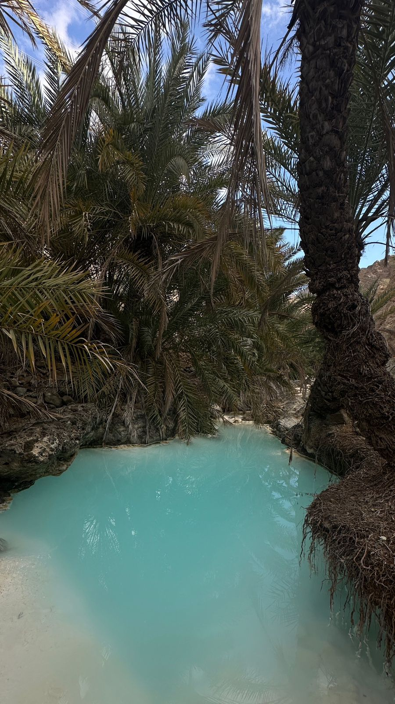
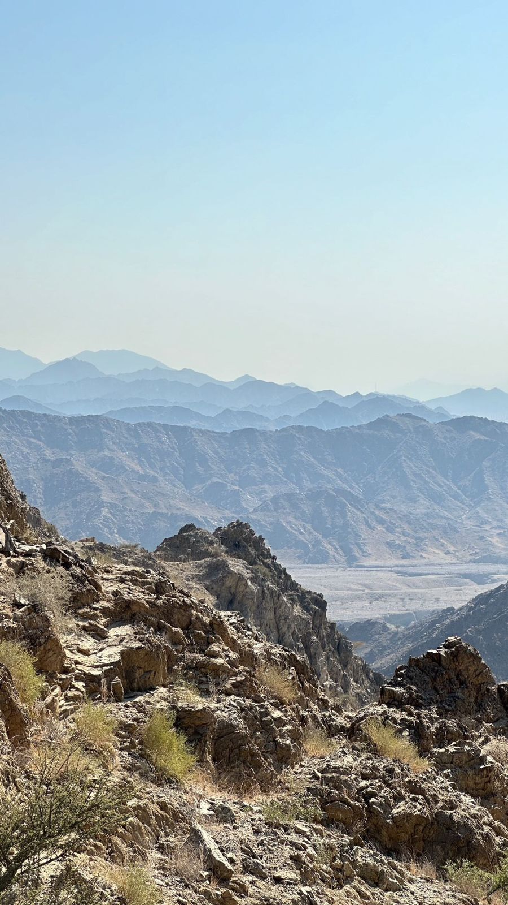

Graduate Researcher · CMU SCS
Ibrahim
Aldarmaki
About
Hi! I am a graduate student at the School of Computer Science at Carnegie Mellon University, where I am supervised by Prof. Bhiksha Raj. I am currently conducting research in Machine Learning and Deep Learning, with a primary focus on representation learning.
I am broadly interested in machine/deep learning, causality, and information theory. Prior to joining CMU, I was working at MBZUAI with Prof. Jin Tian and Prof. Kun Zhang on causality and machine learning.
Publications
How Effective is Your Rebuttal? Identifying Causal Models from the OpenReview System
NeurIPS Workshop CauScien, 2025
Wi-Fi Sensing for Motion Detection using ESP-32 and Raspberry Pi 4: A Comparison
CCNCPS, 2025
RelUNet: Relative Channel Fusion U-Net for Multichannel Speech Enhancement
arXiv:2410.05019, 2024
Open-Source Projects
Miscellaneous



